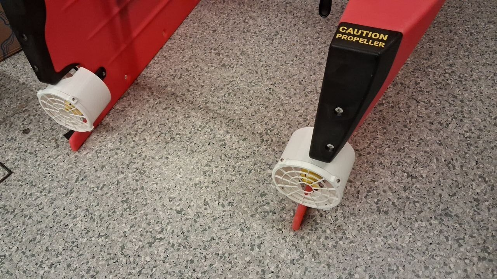
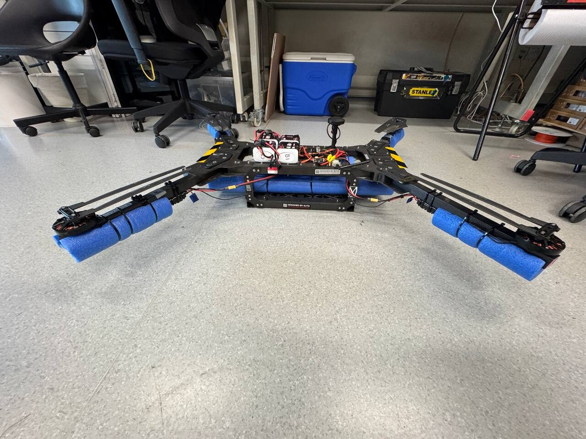
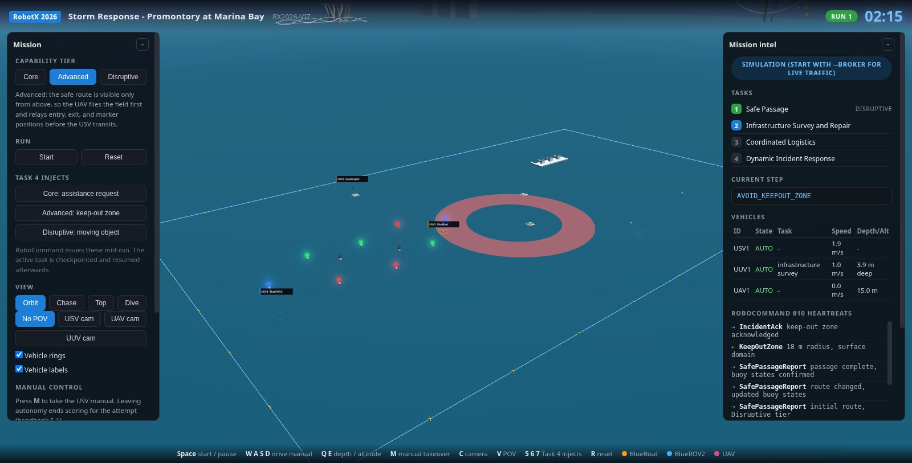

A boat, a submersible and a quadrotor, run from one console.
MARVL is the robotics lab at the Singapore University of Technology and Design. In November we take three uncrewed vehicles to Marina Bay and fly the RobotX Storm Response mission as a single system.
- 3vehicles, one in each domain
- 4mission tasks, Advanced tier target
- 63readiness requirements tracked
- 154automated tests on the ground station
The mission
A storm has hit a coastal port. The four RobotX tasks are one continuous recovery operation, and every one of them needs more than a single vehicle.
1. Safe passage
Ten buoys carry light beacons. At Advanced the route is only visible from above, so the quadrotor reads the field, reports it to RoboCommand and relays the entry, exit and marker positions to the boat before it transits.
2. Infrastructure survey and repair
The ROV homes on the active pinger, follows the pipeline, calls each segment intact or damaged, and holds its magnetic probe on the damaged node. The repaired node then names the resource it needs, and the quadrotor flies it in.
3. Coordinated logistics
The boat finds the green docking bay, docks, sprays the lit window until it turns green, then passes the delivery colour to the quadrotor.
4. Dynamic incident response
RoboCommand interrupts the run with an assistance request, a keep-out zone or a moving vessel. The affected vehicle acknowledges on the wire, responds, then picks up the task it left at the step where it stopped.
The system of systems
Three vehicles, three autopilots, one MAVLink interface behind them so the ground station treats a simulator, a firmware build and a real hull the same way.
Surface
BlueBoat
A 1.2 m catamaran on ArduRover, with shrouded thrusters, a wireless kill switch and a 360 degree status light. It transits the safe passage, docks and fights the window fire, and carries the ROV's surface link.
- AutopilotArduRover on Pixhawk
- Link to shoreWiFi HaLow, MAVLink
- Tasks1, 3, 4

Subsurface
BlueROV2
A six thruster ROV on ArduSub. Without a DVL it has no absolute position underwater, so it works in depth hold rather than guided mode, which is the single design decision that shaped the whole underwater stack.
- AutopilotArduSub, BlueOS companion
- CameraRTSP, 1280x720 at 15 fps
- Tasks2, 4

Air
22 inch quadrotor
Built in the lab on a Pixhawk 6C mini, 6.8 kg in its delivery configuration, floating on foam so a ditching is recoverable. It reads the buoy field from above, relays the route, and carries resource tins to the platforms.
- AutopilotArduPilot Copter
- Endurance18 min, land by 15
- Tasks1, 2, 3, 4

One console, three vehicles
The ground station holds the mission. It drives the vehicles over MAVLink, speaks the RoboCommand protocol to the judges, and keeps a checkpoint of every task so an interruption costs a few seconds rather than the run.

Mission state, not scripts
Three state machines run in parallel: one per vehicle, one per task, one for the mission. Suspend and resume is a property of the task machine, so Task 4 is an interruption rather than a special case.
The protocol is tested, not assumed
Our operator console ran the handbook's run start sequence against RoboNation's own rc-test server. Their decoder wrote the log we submitted.
A digital twin of the course
Marina Bay, the buoy field, the pipeline and the docking bays are modelled to the handbook's build specifications, which is how we rehearse a run before the hardware is on the water.
What we have shown so far
Proof of readiness
Packages for the boat, the ROV, the aircraft and communications went in for the handbook 3.1 window: autonomous runs, kill switch drawings, failsafe documentation and a run start log from RoboNation's test server.
Flight and water testing
Manual and autonomous flights, geofence and ceiling holds, a link loss failsafe, a buoyancy ditching in the pool, and autonomous operations on the boat.
Simulation
The real firmware runs software in the loop behind an emulated HaLow radio, and a scripted mission validates 25 stages end to end before anything gets wet.
Support
The team is hosted by the MARVL lab at SUTD and competes with platforms from the RoboNation and Blue Robotics granted platform programme.
Singapore University of Technology and Design
Host university. Workshop, pool and field access, and the staff time behind the airworthiness and safety paperwork.
MARVL Lab
Multi-Agent Robotics Vision and Learning Lab. The vehicles, the test fleet and the marine robotics experience the team builds on.
Blue Robotics
BlueBoat and BlueROV2 platforms through the RobotX granted platform programme, and the parts that keep both of them running.